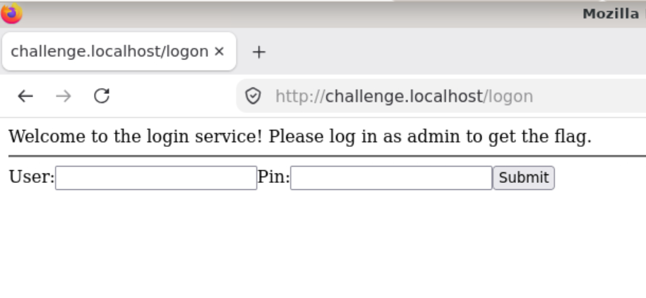
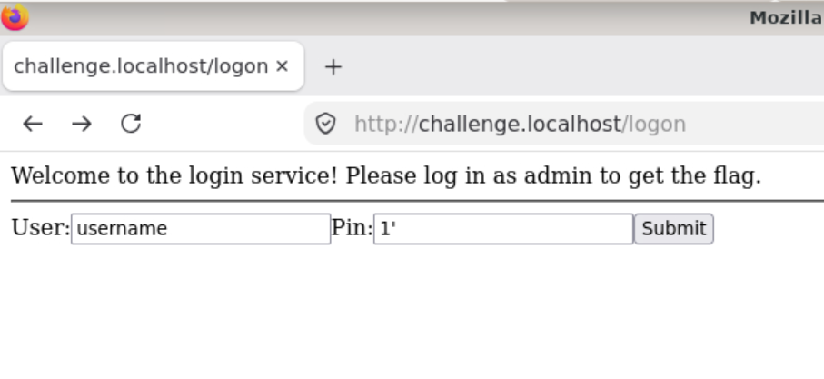
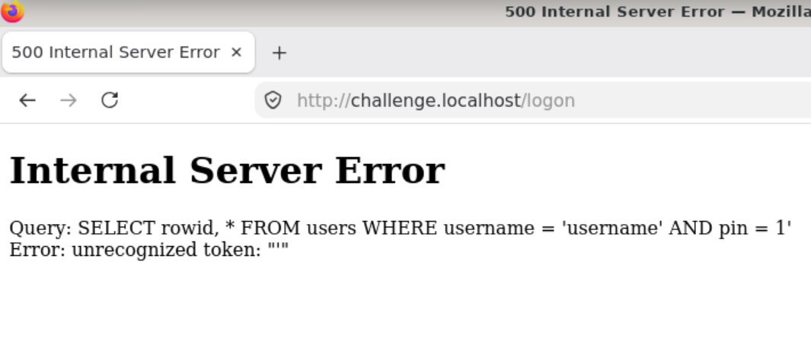
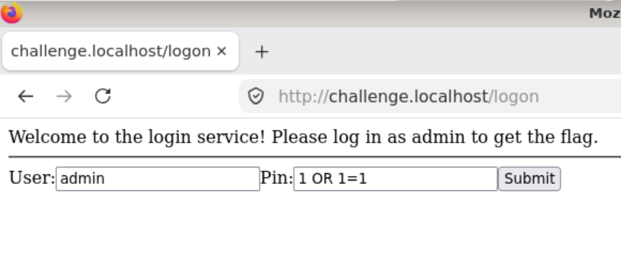
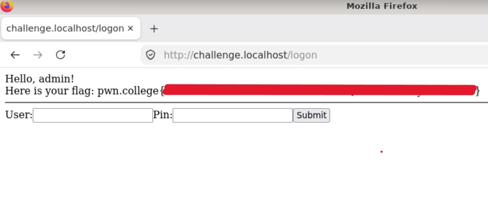
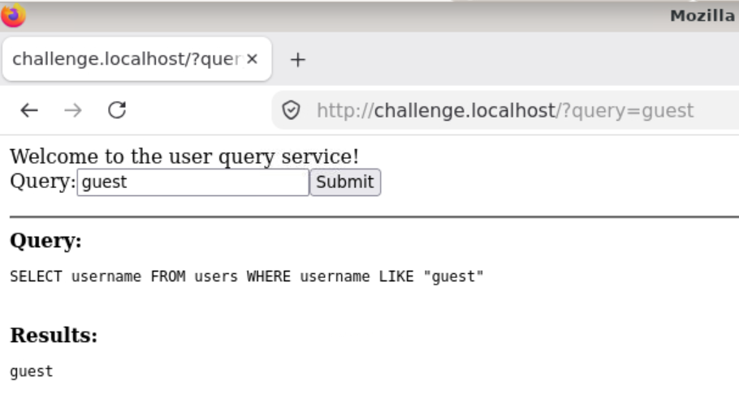
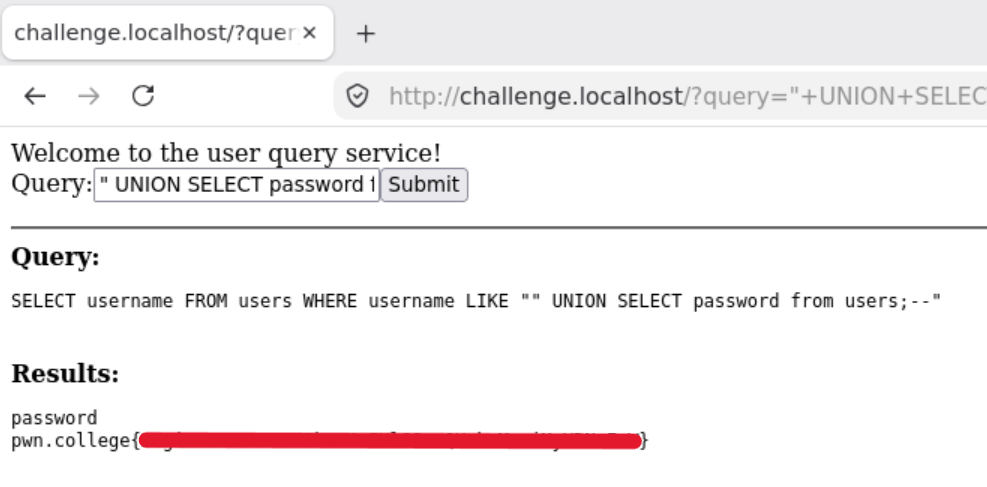

What is a SQL Injection?
SQL is a prgramming language that allows developers to craft queries to update, filter, or otherwise manipulate the data stored in their database. In a SQL Injection attack, hackers insert a SQL query into the input elements of an application in order to perform operations on the server's database.
For instance, consider the following example from pwn.college:

Given an empty login form, hackers will sometimes try crafting input using a quotation mark ( ' ) to try to figure out how the application crafts its SQL query.


With that bad input, we were able to decipher how the website queries its database. As such, we can craft new input to try to manipulate the database.


By filling out the form this way, we changed the application's query to:
SELECT rowid, * FROM
users WHERE username = 'admin' AND pin = 1 OR 1 = 1;
This query tells the database to return the row ID and information fields for all records where the username is "admin" AND the PIN is 1, OR where 1=1. Since 1=1 is always true, every record will be returned by this query. Behind the scenes, the website most likely validates the username and PIN by checking that the query to the database returns with at least one record and then allows us to enter the admin account.
Consider another example from pwn.college:

In this example, the users input a username, and the website queries the database for usernames like the one the user inputted and the displays the list for the user.
The goal in this example is obtaining the admin account's password despite the website's query not selecting that field at the beginning of the query. Creative hackers can bypass this issue by crafting a query to take the union of all of the usernames like the user's input and all of the passwords.

Defense Against SQL Injections
SQL injections are dangerous because they expose a server's database for the hacker to potentially perform serious damage. A successful hacker may be able to:
- Read other users' sensitive information such as financial or medical records
- Create false records
- Delete large volumes of data from the server
- Maliciously modify server content
Similar to cross-site scripting, SQL injection attacks are often prevented by validating user input before carrrying out any operations. This may include writing a script to strip special characters like "'", "--", and ";" from user input or using a library that does it for you.
Source:
SQL
Injection by the Open Worldwide Application Security
Project (OWASP)